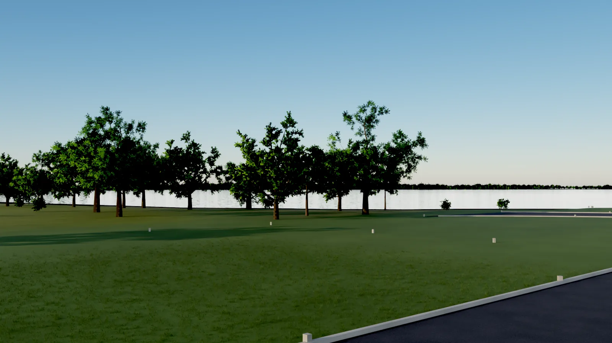
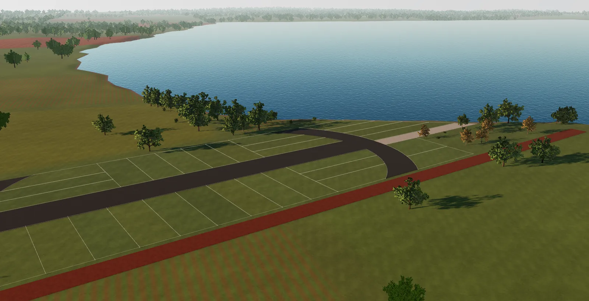
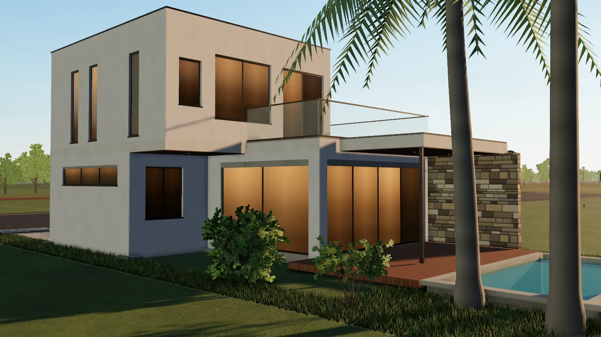

Viva Lago Country · Km 9 Acaray
El comienzo de tu historia.
Treinta y dos lotes sobre el río Acaray, con club náutico y acceso propio al agua. Elegí el tuyo y mirá cómo una residencia toma forma sobre él.
El desarrollo
Un barrio cerrado de casas quinta sobre la margen del río Acaray, a la altura del km 9, en Ciudad del Este. Dos hectáreas ordenadas en cinco manzanas, una avenida central y un club náutico con salida propia al agua.
Comercializa Génesis Negocios Inmobiliarios.
- Superficie total
- 2ha
- Lotes
- 32
- Superficie por lote
- 366–512m²
- Áreas comunes
- 7.599m²
20.000 m² según título
en cinco manzanas, de la A a la E
de 365,80 a 511,56 m² de área propia
club, acceso náutico, administración y calles
Ubicación
Km 9 del Acaray, frente al agua.
- Dirección
- Zona Quinta, Calle 9 Acaray · Ciudad del Este, Alto Paraná
- Coordenadas
- Referencia
- Centro de los cuatro mojones del plano georreferenciado (UTM 21S · WGS 84)
Lotes
Treinta y dos lotes, uno por uno.
Superficies y medidas tomadas del cuadro del plano. Elegí un lote en el plano o en la lista para ver su ficha, recorrerlo en 3D o consultar por él.
Áreas comunes
Lo que se comparte también está en el plano.
Cada lote incluye su parte proporcional de 7.599,23 m² de áreas comunes, según el porcentaje de copropiedad que figura en su ficha.
De la obra a la casa
Ocho etapas, un mismo encuadre.
Del terreno marcado con hilos a la casa con las luces encendidas, sobre el lote B-05 y con la cámara quieta. Elegí una etapa o recorré la obra con el control.
Visualización conceptual generada con la escena 3D: muestra una residencia posible adaptada a un lote de 12 × 32 m, no una obra existente ni un proyecto aprobado.
Recorrido 3D
Elegí el terreno.
Mirá cómo se construye.
El loteo en tres dimensiones, en la luz de la tarde. Al elegir un lote, la cámara se acerca y una residencia conceptual, ajustada a sus medidas, se levanta etapa por etapa: replanteo, estructura, muros, fachadas, aberturas y jardín.

Comercializa
Génesis Negocios Inmobiliarios, Ciudad del Este. Un asesor responde por precio, disponibilidad y condiciones de cada lote.
De dónde sale cada dato
- Loteo y superficies. Proyecto de loteamiento georreferenciado de la Finca 18.485, escala 1/1.000, con cuadro de superficies por lote.
- Posición. Cuatro mojones en coordenadas UTM 21S (WGS 84), relevados con GPS de mano (precisión declarada: 0,80 m).
- Estado comercial. Solo se indica cuando un documento de Génesis lo establece. El resto se consulta.
- Imágenes. Recreaciones generadas con la escena 3D; la residencia es un concepto, no un proyecto aprobado.

Viva Lago Country
El terreno ya está.
El resto es tu historia.
Visualización conceptual.
Contacto
Hablemos de tu lote.
Dejanos tus datos y el lote que te interesa. Un asesor de Génesis te responderá con la información verificada.